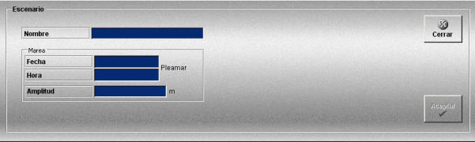

Escenarios
La creación y edición de escenarios se realiza mediante la siguiente ventana.

Esta ventana incluye los datos que se describen a continuación:
Nombre: Nombre del escenario.
Formato: caracteres alfanuméricos.
Fecha: Fecha de la pleamar.
Formato: DD-MM-AAAA
Hora: Hora de la pleamar en la fecha indicada.
Formato: HH:MM:SS
Amplitud: Diferencia en altura entre la marea alta y la marea baja.
Unidades: metros
Rango: 0 – 50
Además de los datos de marea que se definen en esta ventana, opcionalmente los escenarios pueden incluir otros elementos:
Nota: Ver los siguientes apartados para la descripción de estos elementos y el apartado Preparación de Ejercicios para la asignación de estos elementos al Escenario.